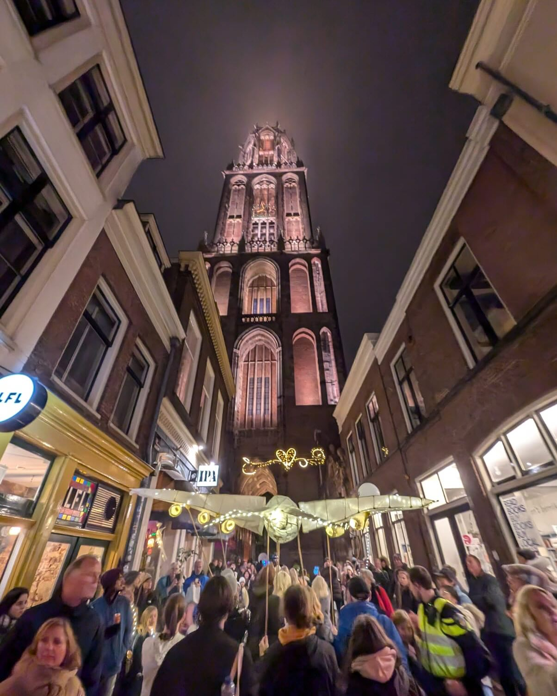
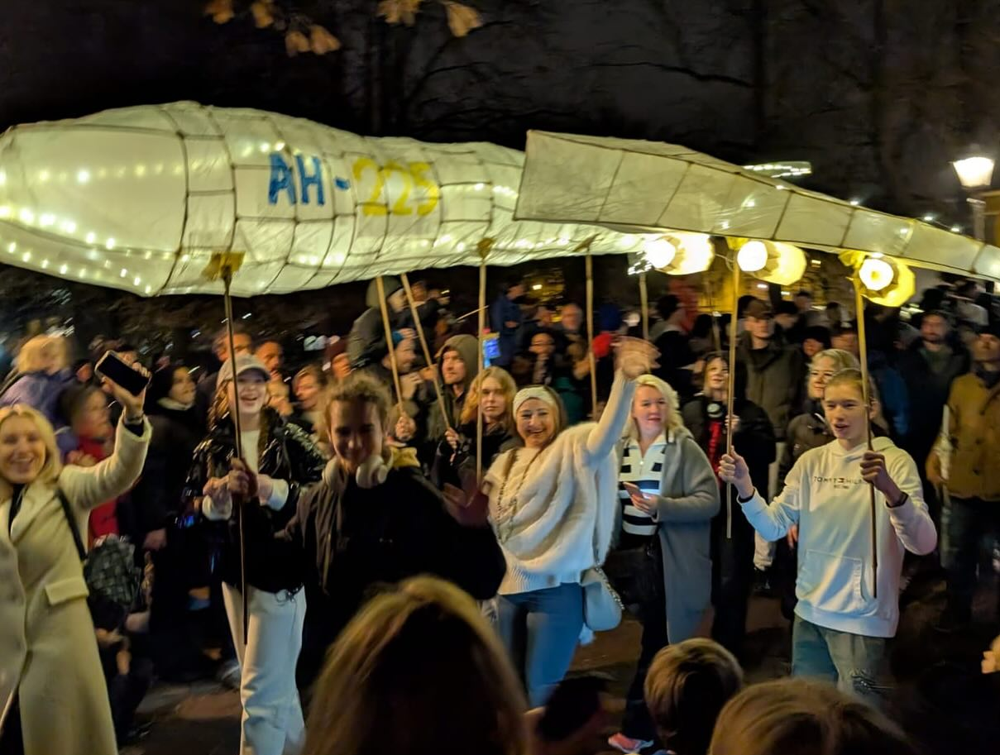
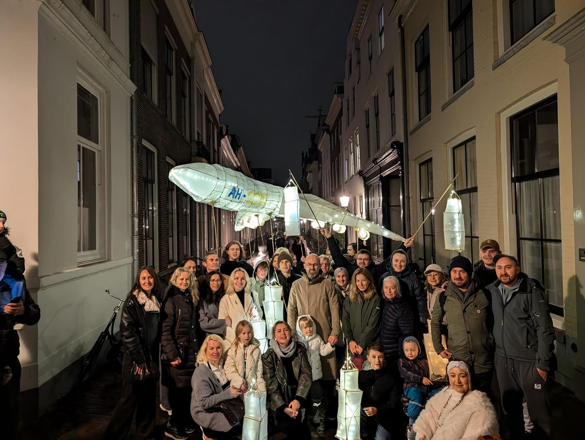

Terugblik / Cultuur & gemeenschapСпогади / Культура та спільнота
Sint Maarten
Parade
2024
Met Mriya dragen we het licht verder.З «Мрією» несемо світло далі.

Een licht voor
de toekomst.Світло для
майбутнього.
Tijdens de Sint Maarten Parade in Utrecht namen kinderen en jongeren uit onze gemeenschap deel met hun eigen lantaarn: Mriya. De grote lichtsculptuur, gebouwd in de vorm van het Oekraïense vliegtuig, stond voor hoop en licht.Під час параду Святого Мартіна в Утрехті діти та молодь нашої спільноти представили власний ліхтар — «Мрію». Велика світлова скульптура у формі українського літака стала символом надії та світла.
Met zorg en toewijding gemaakt en samen door de stad gedragen, bracht Mriya de gemeenschap bij elkaar. Onder de Domtoren en in de straten van Utrecht werd de lantaarn een zichtbaar teken van verbondenheid.Створена з любов’ю та відданістю й пронесена разом містом, «Мрія» об’єднала спільноту. Під Домською вежею та на вулицях Утрехта ліхтар став видимим знаком єдності.
Achter die gezamenlijke deelname staat een warme plek waar kinderen en jongeren zich thuis kunnen voelen. Met steun van begeleiders, psychologen en Nederlandse vrienden krijgen zij ruimte om samen te maken, te groeien en vooruit te kijken.За цією спільною участю стоїть теплий простір, де діти й молодь можуть почуватися вдома. Завдяки підтримці наставників, психологів і нідерландських друзів вони мають місце, щоб творити, зростати та дивитися в майбутнє.
Gebaseerd op de Instagram-terugblik gepubliceerd op 10 november 2024.На основі допису-спогаду в Instagram, опублікованого 10 листопада 2024 року.
In beeldenУ світлинах
Klik op een foto om deze te vergroten.Натисніть на світлину, щоб збільшити.




